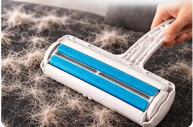
1מעבירים
קדימה ואחורה על הספה, הבגדים או המושב.
מסיר שיער רב־פעמי לכלבים ולחתולים
מעבירים על הספה, על הבגדים או על מושב הרכב — והפרווה נאספת לתוך המיכל. בלי מדבקות, בלי סוללות, ובלי לקנות מילויים שוב ושוב.
99 ₪ ליחידה · זוג ב-178 ₪ · משלוח חינם
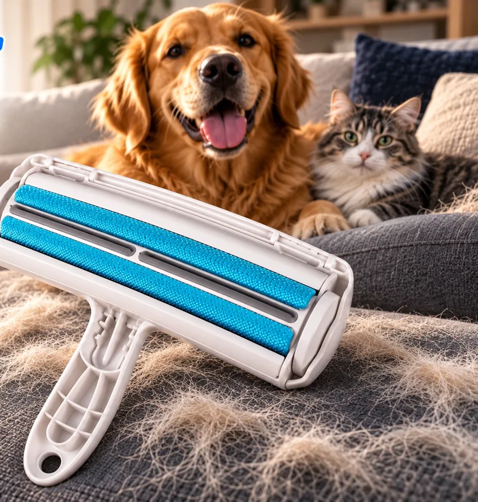
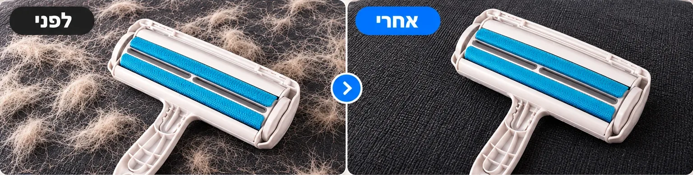
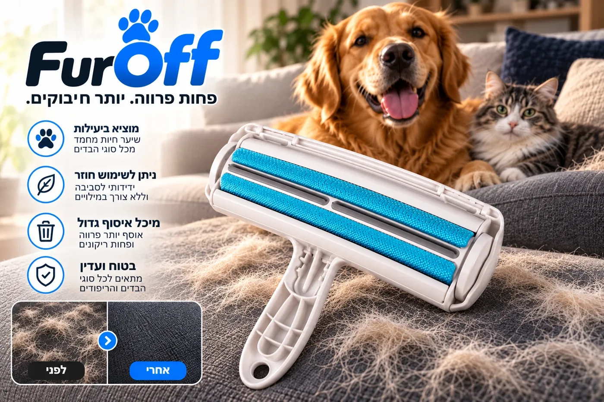
FurOff™ Pet Hair Remover
מספר המעקב נשלח במייל ברגע שההזמנה יוצאת.
יש לכם 30 יום לנסות את FurOff בבית. אם הוא לא מתאים לכם — פנו אלינו ונחזיר את הכסף.
איך זה עובד

1קדימה ואחורה על הספה, הבגדים או המושב.
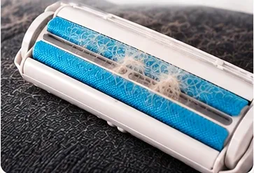
2הגלגלות מושכות את השיער ישר לתוך המיכל.
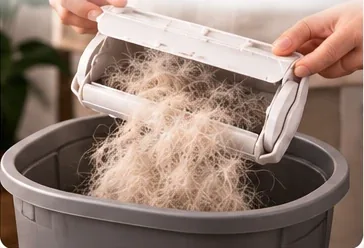
3פותחים את המיכל, מרוקנים לפח. זהו.
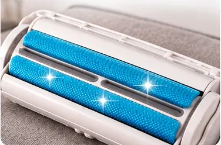
4בלי מילויים ובלי עלויות — מוכן לפעם הבאה.
לפני ואחרי
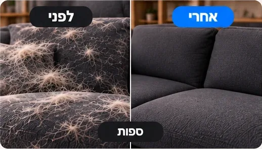
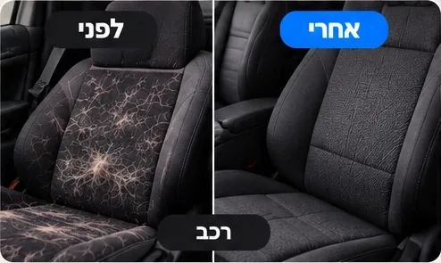
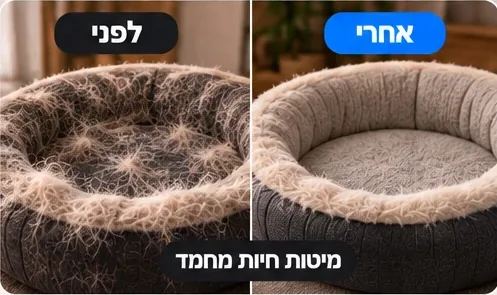
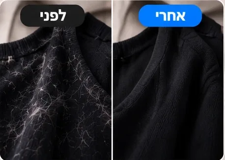
וגם שמיכות, שטיחים, כריות ומצעים.
בפעולה
למה FurOff
| FurOff | גליל דביק | שואב אבק | |
|---|---|---|---|
| רב־פעמי | ✓ | ✕ | ✓ |
| בלי עלויות המשך | ✓ | ✕ | ✓ |
| בלי חשמל ובלי רעש | ✓ | ✓ | ✕ |
| מוכן בשנייה | ✓ | ✓ | ✕ |
| שולף שיער שנתקע בבד | ✓ | ✕ | חלקית |
| בלי פסולת פלסטיק | ✓ | ✕ | ✓ |
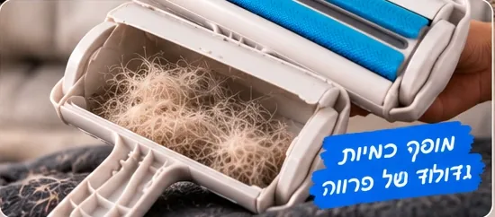
מה יש בפנים
בעלי כלבים מספרים
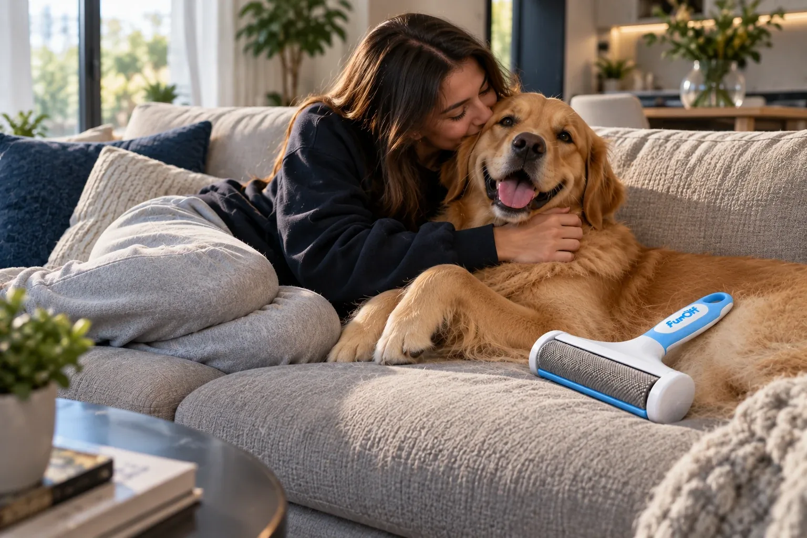
פחות גלילים, פחות שאיבות, פחות "רגע, אל תעלה על הספה". יותר ערבים ביחד.
אם FurOff לא עושה לכם סדר בפרווה תוך 30 יום — מחזירים את הכסף. בלי טפסים מסובכים ובלי שאלות.
שאלות נפוצות
הגלגלות עשויות מבד שתופס שיער ומושך אותו לתוך המיכל בכל העברה — בדיוק מה שרואים בתמונות הלפני/אחרי. ואם זה לא עובד לכם, יש 30 יום להחזיר ולקבל את הכסף.
כן. אוסף שיער של כלבים וחתולים משני הסוגים. שיער קצר ודוקרני נוטה להיתקע עמוק בבד — ושם בדיוק FurOff עושה את ההבדל.
מספר מעקב נשלח במייל.
לא. אין דבק ואין להבים — רק גלגול. מתאים לרוב הבדים והריפודים. על בדים עדינים במיוחד מומלץ לנסות קודם בפינה נסתרת.
לא. FurOff רב־פעמי לגמרי. מרוקנים את המיכל וממשיכים.
אחד לבית ואחד לרכב (או מתנה לחבר עם כלב). בזוג כל יחידה יוצאת 89 ₪ במקום 99 ₪.
יש לכם 30 יום לנסות. לא מרוצים? פונים אלינו ומקבלים את הכסף בחזרה.